Last updated: 2020-07-17
Checks: 6 1
Knit directory: YS_GFP_POS_D/
This reproducible R Markdown analysis was created with workflowr (version 1.6.2). The Checks tab describes the reproducibility checks that were applied when the results were created. The Past versions tab lists the development history.
The R Markdown is untracked by Git. To know which version of the R Markdown file created these results, you’ll want to first commit it to the Git repo. If you’re still working on the analysis, you can ignore this warning. When you’re finished, you can run wflow_publish to commit the R Markdown file and build the HTML.
Great job! The global environment was empty. Objects defined in the global environment can affect the analysis in your R Markdown file in unknown ways. For reproduciblity it’s best to always run the code in an empty environment.
The command set.seed(20200510) was run prior to running the code in the R Markdown file. Setting a seed ensures that any results that rely on randomness, e.g. subsampling or permutations, are reproducible.
Great job! Recording the operating system, R version, and package versions is critical for reproducibility.
Nice! There were no cached chunks for this analysis, so you can be confident that you successfully produced the results during this run.
Great job! Using relative paths to the files within your workflowr project makes it easier to run your code on other machines.
Great! You are using Git for version control. Tracking code development and connecting the code version to the results is critical for reproducibility.
The results in this page were generated with repository version 7a338b6. See the Past versions tab to see a history of the changes made to the R Markdown and HTML files.
Note that you need to be careful to ensure that all relevant files for the analysis have been committed to Git prior to generating the results (you can use wflow_publish or wflow_git_commit). workflowr only checks the R Markdown file, but you know if there are other scripts or data files that it depends on. Below is the status of the Git repository when the results were generated:
Ignored files:
Ignored: .DS_Store
Ignored: .Rhistory
Ignored: .Rproj.user/
Untracked files:
Untracked: analysis/01-quality-control.Rmd
Untracked: analysis/02-normalization.Rmd
Untracked: analysis/03-feature-selection.Rmd
Untracked: analysis/04-reduced-dimensions.Rmd
Untracked: analysis/05-clustering.Rmd
Untracked: analysis/06-doublet-detection.Rmd
Untracked: analysis/07-cell-cycle.Rmd
Untracked: analysis/08-marker-detection.Rmd
Untracked: analysis/09-cell-annotation.Rmd
Untracked: analysis/10-data-integration.Rmd
Untracked: analysis/cache/
Untracked: data/01-quality-control.rds
Untracked: data/02-normalization.rds
Untracked: data/03-feature-selection.rds
Untracked: data/04-reduced-dimensions.rds
Untracked: data/05-clustering.rds
Untracked: data/06-doublet-detection.rds
Untracked: data/07-cell-cycle.rds
Untracked: data/08-marker-detection.rds
Untracked: data/09-cell-annotation.rds
Untracked: data/cell-markers.csv
Untracked: data/salmon-quant.rds
Untracked: data/sce_10.5_markers.RData
Note that any generated files, e.g. HTML, png, CSS, etc., are not included in this status report because it is ok for generated content to have uncommitted changes.
There are no past versions. Publish this analysis with wflow_publish() to start tracking its development.
In this document we are going to perform quality control on the cells.
Set chunk options:
knitr::opts_chunk$set(
autodep = TRUE,
cache = TRUE,
cache.path = "cache/01-quality-control.Rmd/",
dev = "png",
error = FALSE,
message = FALSE,
warning = FALSE
)Load required packages:
library(BiocSingular)
library(SingleCellExperiment)
library(eulerr)
library(patchwork)
library(robustbase)
library(scater)
library(scran)Read experiment data:
sce <- readRDS("data/salmon-quant.rds")Make feature names unique:
rownames(sce) <- uniquifyFeatureNames(rowData(sce)$gene_id, rowData(sce)$gene_name)Make sample names unique:
colnames(sce) <- colData(sce)$sampleWe begin by exploring the dataset which contains 96 cells and 55472 genes.
Identify mitochondrial and reporter genes:
mit <- which(seqnames(sce) == "MT")
gfp <- which(seqnames(sce) == "EGFP")Compute QC metrics for each cell:
sce <- addPerCellQC(sce, subsets = list(MT = mit, EGFP = gfp))
dat <- as.data.frame(colData(sce))Inspect the distributions of QC metrics:
wrap_plots(
plotColData(sce, "sum") + scale_y_log10() + ggtitle("Total count"),
plotColData(sce, "detected") + scale_y_log10() + ggtitle("Detected features"),
plotColData(sce, "subsets_MT_percent") + ggtitle("MT percent"),
plotColData(sce, "altexps_ERCC_percent") + ggtitle("ERCC percent")
)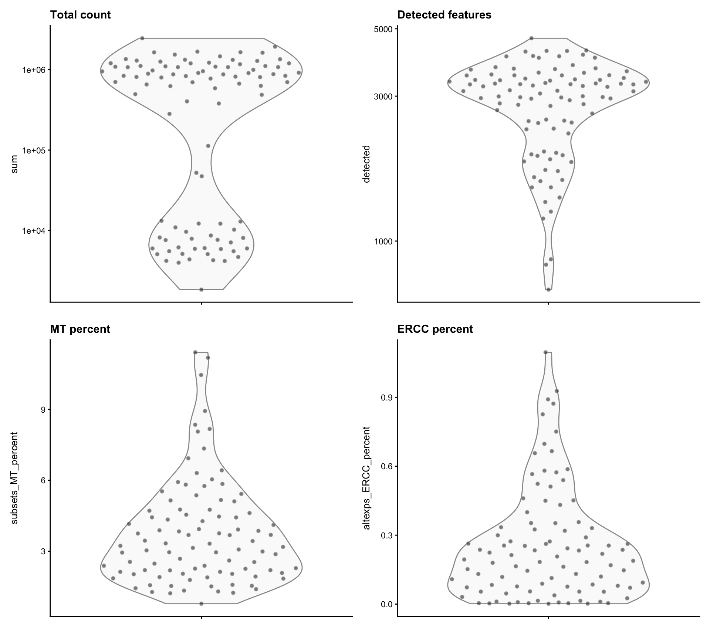
Calculate dimenionality reduction data:
set.seed(1607403385)
sce <- computeLibraryFactors(sce)
sce <- logNormCounts(sce)
sce <- runPCA(sce, BSPARAM = ExactParam())
sce <- runTSNE(sce, dimred = "PCA")
sce <- runUMAP(sce, dimred = "PCA")Inspect dimensionality reduction plots:
patchwork::wrap_plots(
plotPCA(sce, colour_by = "sum") + ggtitle("Total count"),
plotPCA(sce, colour_by = "detected") + ggtitle("Detected features"),
plotPCA(sce, colour_by = "subsets_MT_percent") + ggtitle("MT percent"),
plotPCA(sce, colour_by = "altexps_ERCC_percent") + ggtitle("ERCC percent"),
ncol = 2
)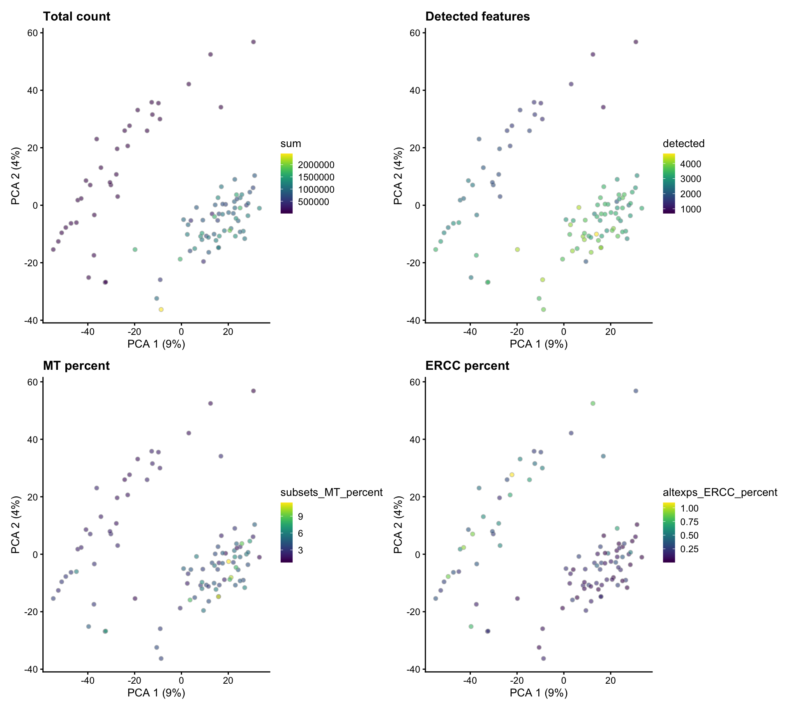
patchwork::wrap_plots(
plotTSNE(sce, colour_by = "sum") + ggtitle("Total count"),
plotTSNE(sce, colour_by = "detected") + ggtitle("Detected features"),
plotTSNE(sce, colour_by = "subsets_MT_percent") + ggtitle("MT percent"),
plotTSNE(sce, colour_by = "altexps_ERCC_percent") + ggtitle("ERCC percent"),
ncol = 2
)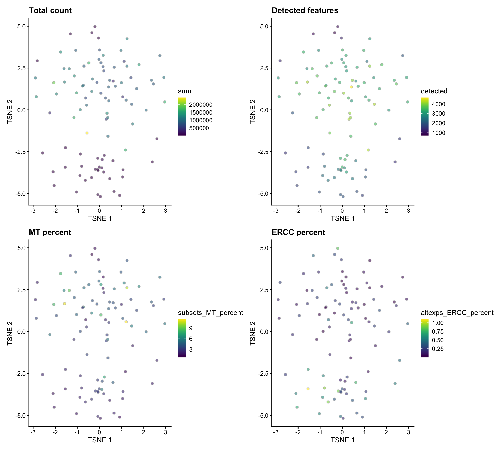
patchwork::wrap_plots(
plotUMAP(sce, colour_by = "sum") + ggtitle("Total count"),
plotUMAP(sce, colour_by = "detected") + ggtitle("Detected features"),
plotUMAP(sce, colour_by = "subsets_MT_percent") + ggtitle("MT percent"),
plotUMAP(sce, colour_by = "altexps_ERCC_percent") + ggtitle("ERCC percent"),
ncol = 2
)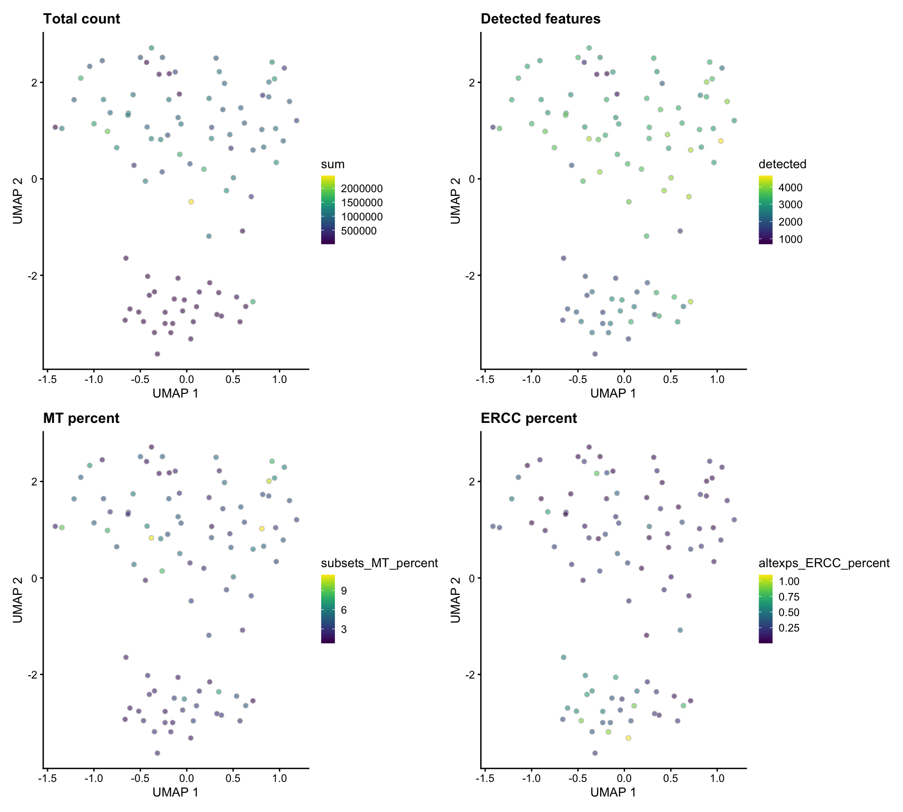
We will now perform filtering to remove low-quality cells:
The first approach to identifying low-quality cells is to apply manual thresholds on the QC metrics:
dat <- DataFrame(
low_lib_size = sce$sum < 10000,
low_n_features = sce$detected < 1000,
high_subsets_MT_percent = sce$subsets_MT_percent > 10,
high_altexps_ERCC_percent = sce$altexps_ERCC_percent > 5
)
sce$manual_discard <- dat$low_lib_size | dat$low_n_features | dat$high_subsets_MT_percent | dat$high_altexps_ERCC_percentInspect distribution of QC metrics:
wrap_plots(
plotColData(sce, "sum", colour_by = "manual_discard") + scale_y_log10() + ggtitle("Total count"),
plotColData(sce, "detected", colour_by = "manual_discard") + scale_y_log10() + ggtitle("Detected features"),
plotColData(sce, "subsets_MT_percent", colour_by = "manual_discard") + ggtitle("MT percent"),
plotColData(sce, "altexps_ERCC_percent", colour_by = "manual_discard") + ggtitle("ERCC percent")
)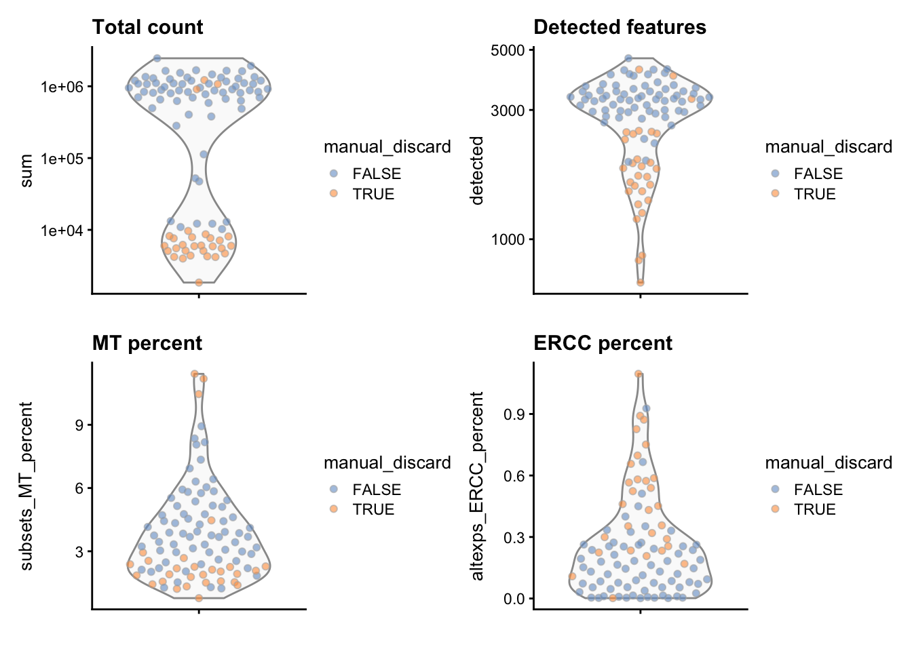
Inspect dimensionality reduction plots:
patchwork::wrap_plots(
plotPCA(sce, colour_by = "sum", shape_by = "manual_discard") + ggtitle("Total count"),
plotPCA(sce, colour_by = "detected", shape_by = "manual_discard") + ggtitle("Detected features"),
plotPCA(sce, colour_by = "subsets_MT_percent", shape_by = "manual_discard") + ggtitle("MT percent"),
plotPCA(sce, colour_by = "altexps_ERCC_percent", shape_by = "manual_discard") + ggtitle("ERCC percent"),
ncol = 2
)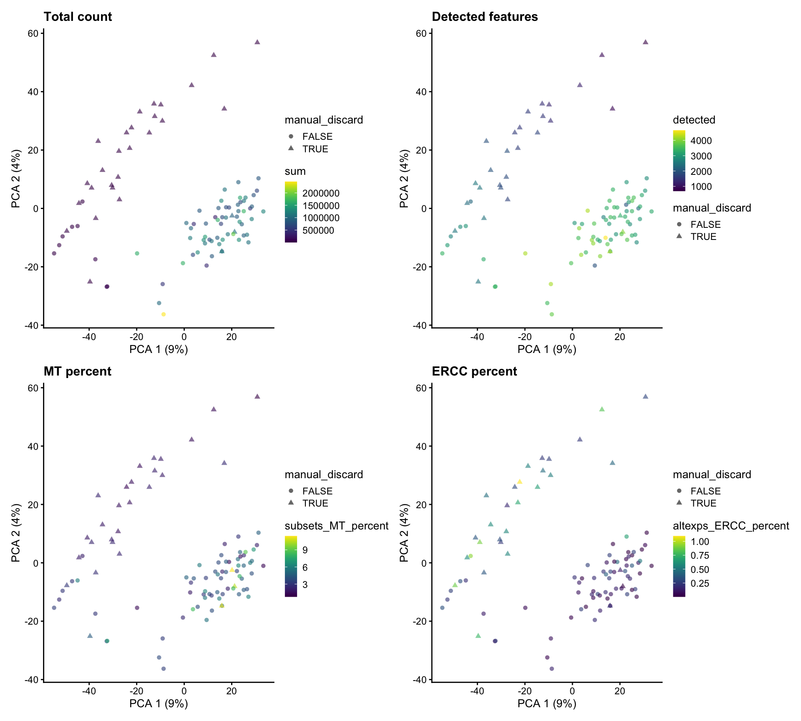
patchwork::wrap_plots(
plotTSNE(sce, colour_by = "sum", shape_by = "manual_discard") + ggtitle("Total count"),
plotTSNE(sce, colour_by = "detected", shape_by = "manual_discard") + ggtitle("Detected features"),
plotTSNE(sce, colour_by = "subsets_MT_percent", shape_by = "manual_discard") + ggtitle("MT percent"),
plotTSNE(sce, colour_by = "altexps_ERCC_percent", shape_by = "manual_discard") + ggtitle("ERCC percent"),
ncol = 2
)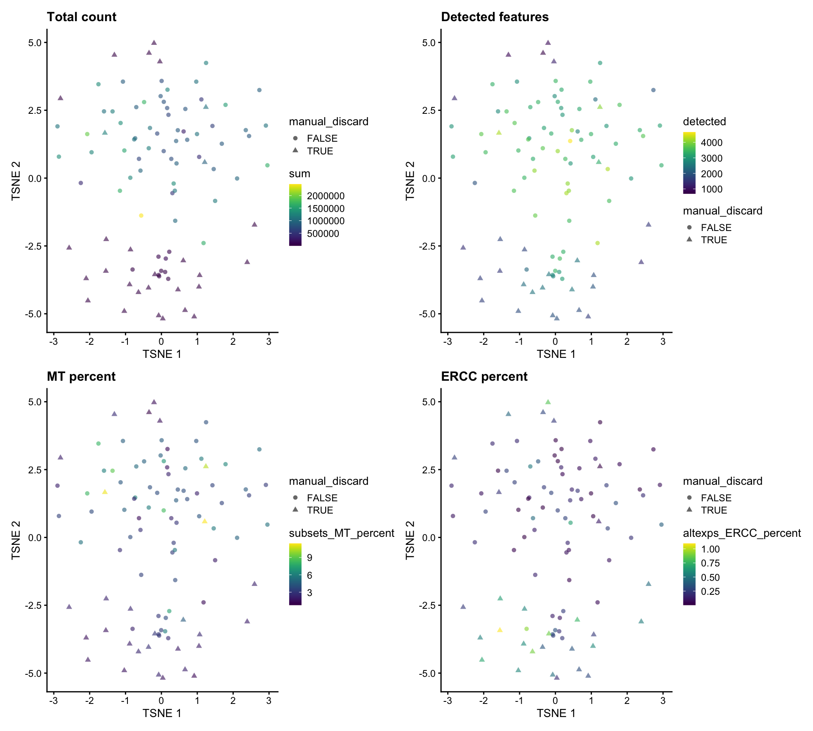
patchwork::wrap_plots(
plotUMAP(sce, colour_by = "sum", shape_by = "manual_discard") + ggtitle("Total count"),
plotUMAP(sce, colour_by = "detected", shape_by = "manual_discard") + ggtitle("Detected features"),
plotUMAP(sce, colour_by = "subsets_MT_percent", shape_by = "manual_discard") + ggtitle("MT percent"),
plotUMAP(sce, colour_by = "altexps_ERCC_percent", shape_by = "manual_discard") + ggtitle("ERCC percent"),
ncol = 2
)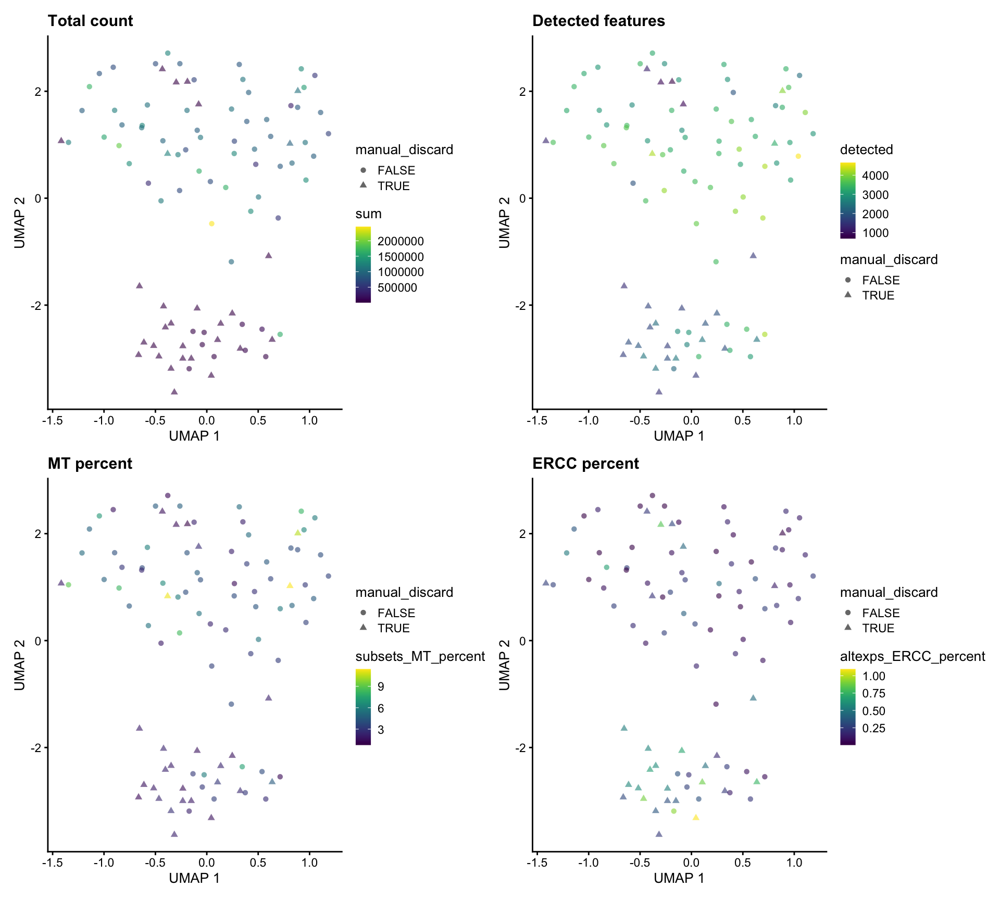
The next approach is to identify cells that are outliers based on the median absolute deviation for the QC metrics:
dat <- quickPerCellQC(sce, percent_subsets = c("subsets_MT_percent", "altexps_ERCC_percent"))
sce$adaptive_discard <- dat$discardInspect distribution of QC metrics:
wrap_plots(
plotColData(sce, "sum", colour_by = "adaptive_discard") + scale_y_log10() + ggtitle("Total count"),
plotColData(sce, "detected", colour_by = "adaptive_discard") + scale_y_log10() + ggtitle("Detected features"),
plotColData(sce, "subsets_MT_percent", colour_by = "adaptive_discard") + ggtitle("MT percent"),
plotColData(sce, "altexps_ERCC_percent", colour_by = "adaptive_discard") + ggtitle("ERCC percent")
)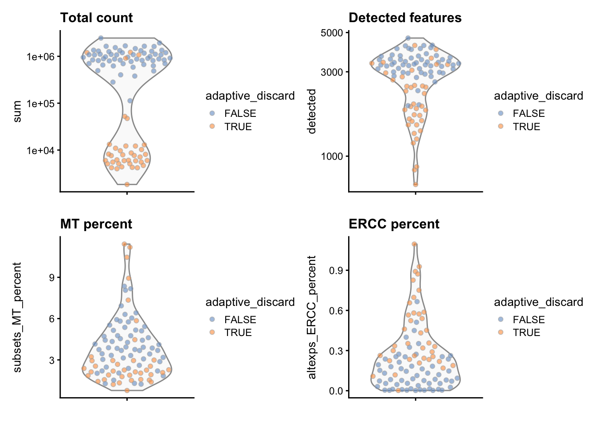
Inspect dimensionality reduction plots:
patchwork::wrap_plots(
plotPCA(sce, colour_by = "sum", shape_by = "adaptive_discard") + ggtitle("Total count"),
plotPCA(sce, colour_by = "detected", shape_by = "adaptive_discard") + ggtitle("Detected features"),
plotPCA(sce, colour_by = "subsets_MT_percent", shape_by = "adaptive_discard") + ggtitle("MT percent"),
plotPCA(sce, colour_by = "altexps_ERCC_percent", shape_by = "adaptive_discard") + ggtitle("ERCC percent"),
ncol = 2
)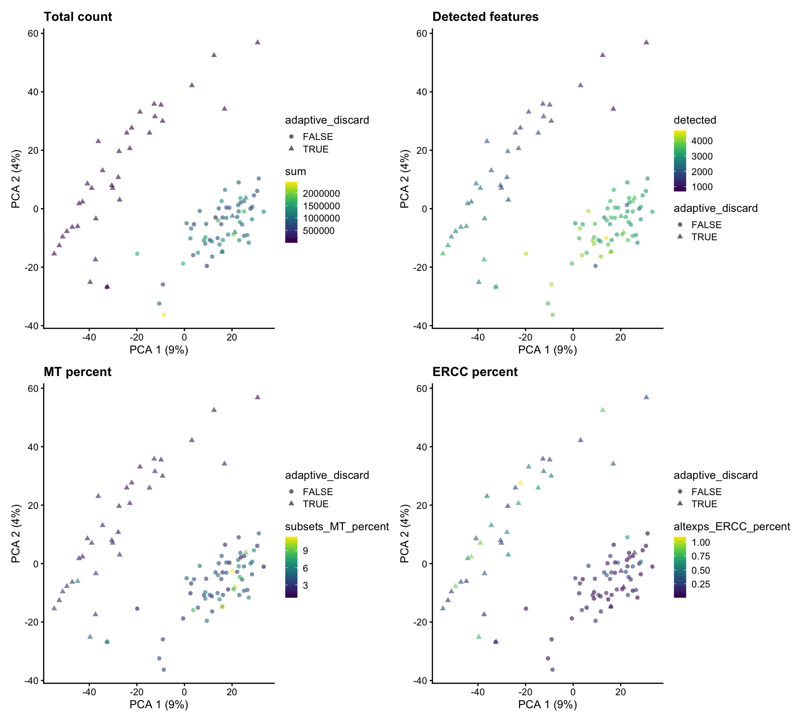
patchwork::wrap_plots(
plotTSNE(sce, colour_by = "sum", shape_by = "adaptive_discard") + ggtitle("Total count"),
plotTSNE(sce, colour_by = "detected", shape_by = "adaptive_discard") + ggtitle("Detected features"),
plotTSNE(sce, colour_by = "subsets_MT_percent", shape_by = "adaptive_discard") + ggtitle("MT percent"),
plotTSNE(sce, colour_by = "altexps_ERCC_percent", shape_by = "adaptive_discard") + ggtitle("ERCC percent"),
ncol = 2
)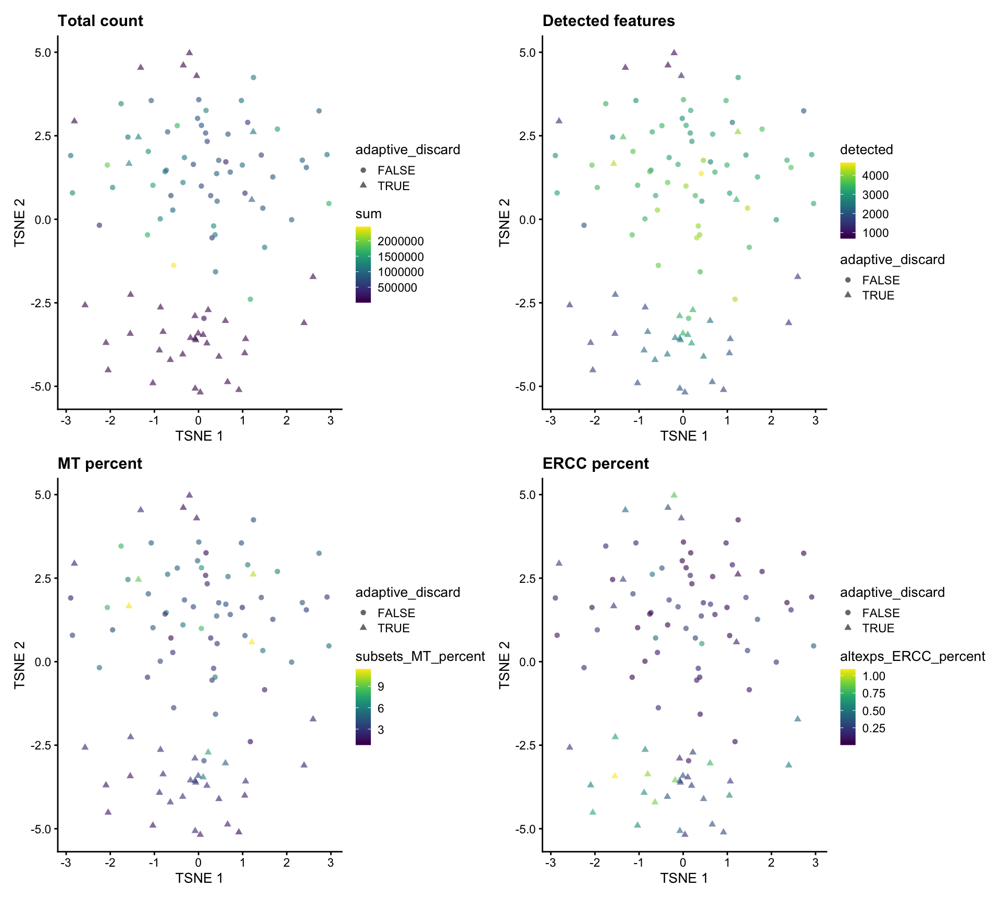
patchwork::wrap_plots(
plotUMAP(sce, colour_by = "sum", shape_by = "adaptive_discard") + ggtitle("Total count"),
plotUMAP(sce, colour_by = "detected", shape_by = "adaptive_discard") + ggtitle("Detected features"),
plotUMAP(sce, colour_by = "subsets_MT_percent", shape_by = "adaptive_discard") + ggtitle("MT percent"),
plotUMAP(sce, colour_by = "altexps_ERCC_percent", shape_by = "adaptive_discard") + ggtitle("ERCC percent"),
ncol = 2
)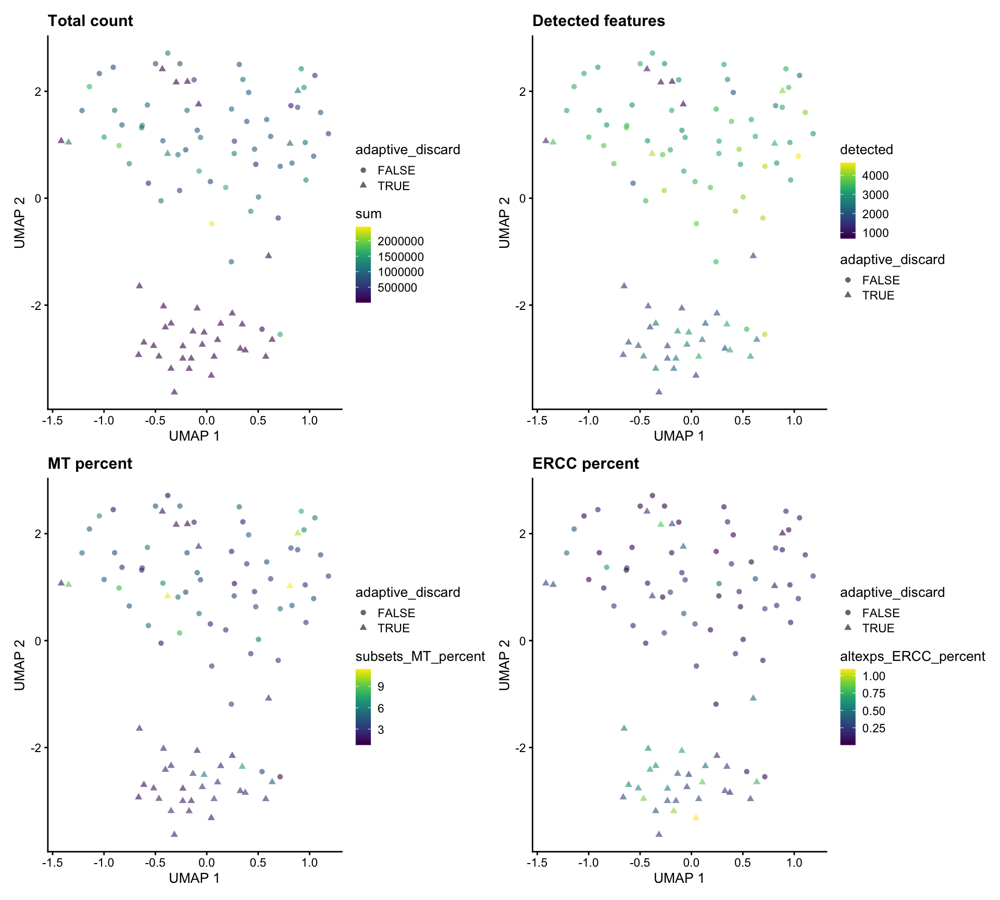
The last approach is to identify outliers in high-dimensional space based on the QC metrics for each cell:
mat <- cbind(log10(sce$sum), log10(sce$detected), sce$subsets_MT_percent, sce$altexps_ERCC_percent)
adj <- adjOutlyingness(mat, only.outlyingness = TRUE)
out <- isOutlier(adj, type = "higher")
sce$outlier_discard <- outInspect distribution of QC metrics:
wrap_plots(
plotColData(sce, "sum", colour_by = "outlier_discard") + scale_y_log10() + ggtitle("Total count"),
plotColData(sce, "detected", colour_by = "outlier_discard") + scale_y_log10() + ggtitle("Detected features"),
plotColData(sce, "subsets_MT_percent", colour_by = "outlier_discard") + ggtitle("MT percent"),
plotColData(sce, "altexps_ERCC_percent", colour_by = "outlier_discard") + ggtitle("ERCC percent")
)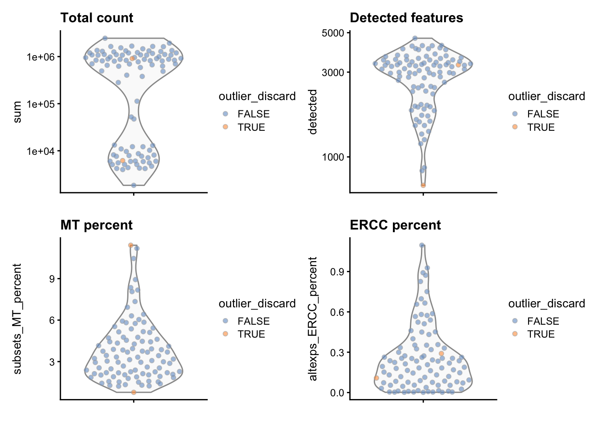
Inspect dimensionality reduction plots:
patchwork::wrap_plots(
plotPCA(sce, colour_by = "sum", shape_by = "outlier_discard") + ggtitle("Total count"),
plotPCA(sce, colour_by = "detected", shape_by = "outlier_discard") + ggtitle("Detected features"),
plotPCA(sce, colour_by = "subsets_MT_percent", shape_by = "outlier_discard") + ggtitle("MT percent"),
plotPCA(sce, colour_by = "altexps_ERCC_percent", shape_by = "outlier_discard") + ggtitle("ERCC percent"),
ncol = 2
)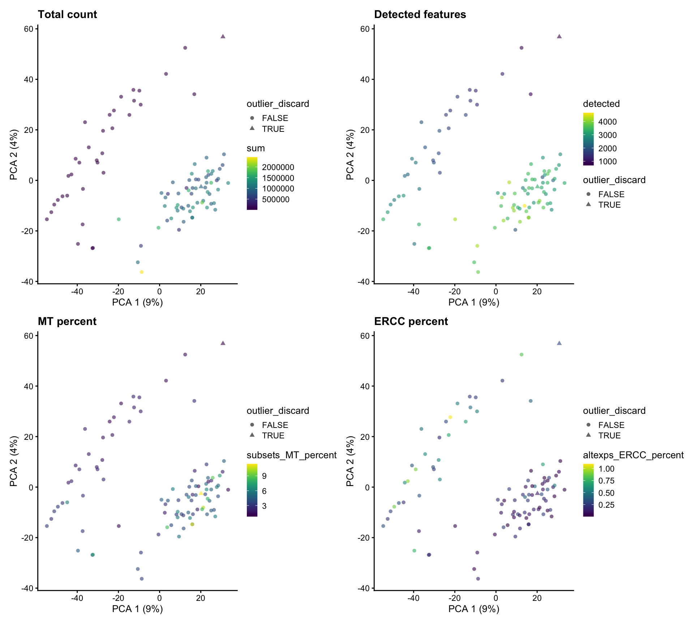
patchwork::wrap_plots(
plotTSNE(sce, colour_by = "sum", shape_by = "outlier_discard") + ggtitle("Total count"),
plotTSNE(sce, colour_by = "detected", shape_by = "outlier_discard") + ggtitle("Detected features"),
plotTSNE(sce, colour_by = "subsets_MT_percent", shape_by = "outlier_discard") + ggtitle("MT percent"),
plotTSNE(sce, colour_by = "altexps_ERCC_percent", shape_by = "outlier_discard") + ggtitle("ERCC percent"),
ncol = 2
)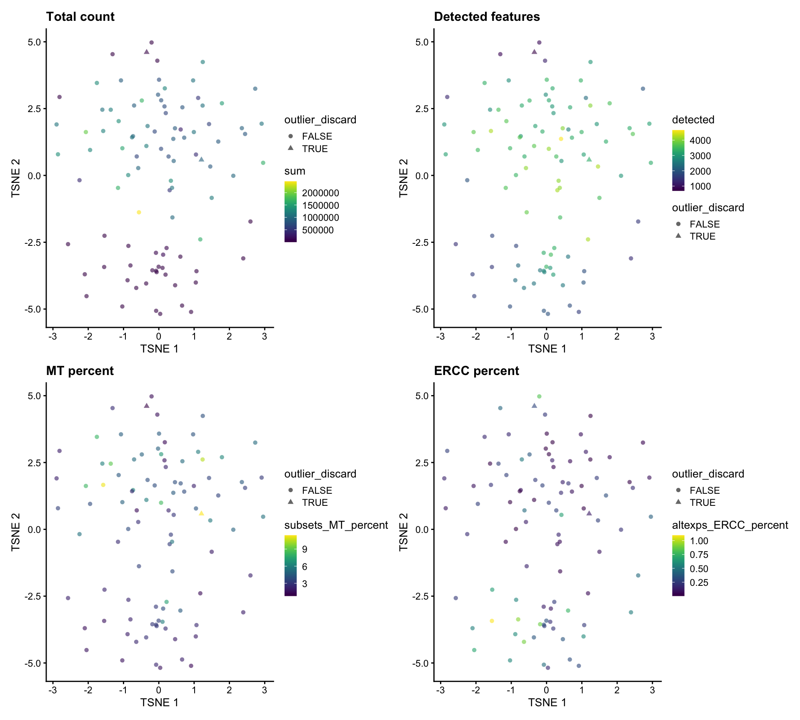
patchwork::wrap_plots(
plotUMAP(sce, colour_by = "sum", shape_by = "outlier_discard") + ggtitle("Total count"),
plotUMAP(sce, colour_by = "detected", shape_by = "outlier_discard") + ggtitle("Detected features"),
plotUMAP(sce, colour_by = "subsets_MT_percent", shape_by = "outlier_discard") + ggtitle("MT percent"),
plotUMAP(sce, colour_by = "altexps_ERCC_percent", shape_by = "outlier_discard") + ggtitle("ERCC percent"),
ncol = 2
)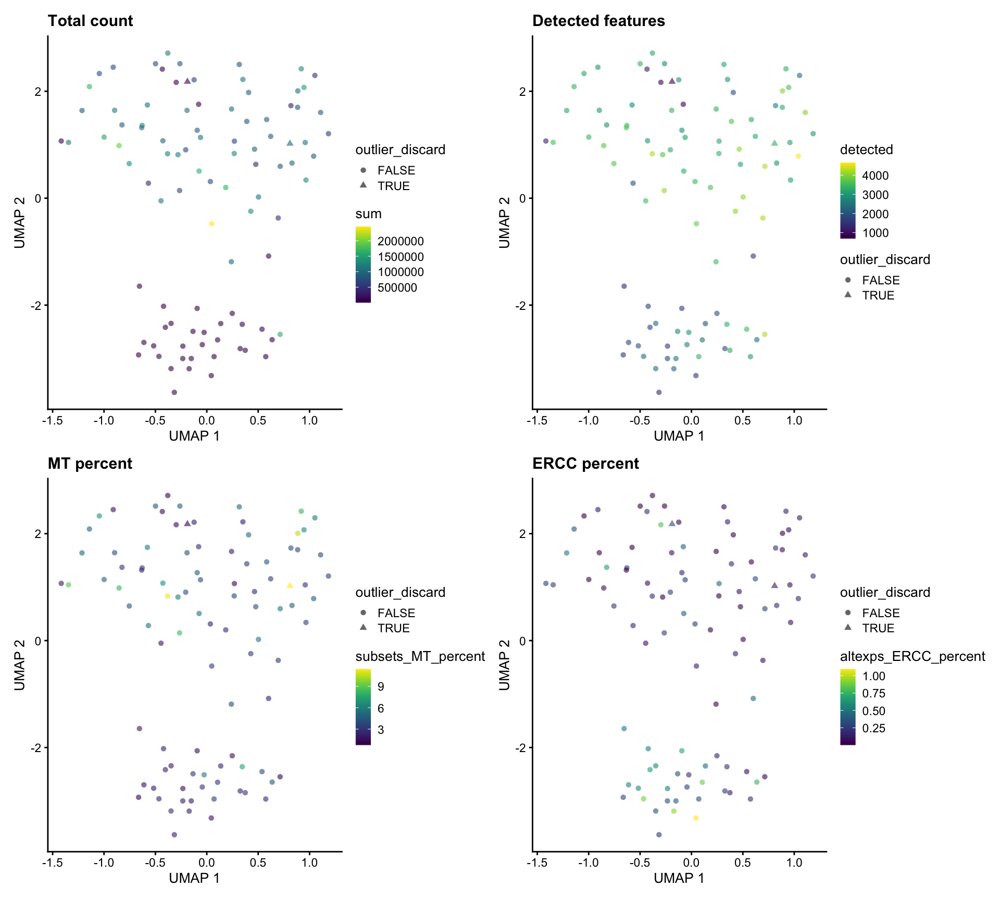
Compare the number of cells selected between methods using an Euler diagram:
mat <- cbind(Keep = TRUE, Manual = sce$manual_discard, Adaptive = sce$adaptive_discard, Outlier = sce$outlier_discard)
fit <- euler(mat, shape = "circle")
col <- RColorBrewer::brewer.pal(n = 4, name = "Pastel2")
plot(fit, fill = col, quantities = TRUE)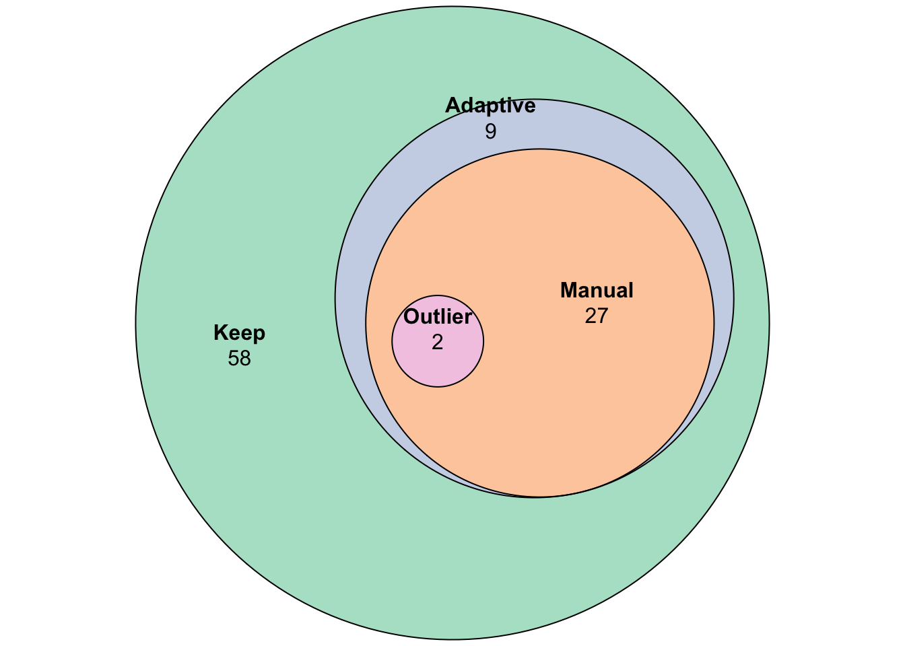
We are going to use the adaptive filtering to remove low quality cells:
sce <- sce[, !sce$adaptive_discard]Compute QC metrics for each gene:
sce <- addPerFeatureQC(sce)
dat <- as.data.frame(rowData(sce))Plot the distribution of log-means across all genes:
ggplot(dat, aes(mean)) +
geom_histogram(bins = 100, colour = "black", fill = "grey") +
scale_x_log10(n.breaks = 10) +
theme_bw()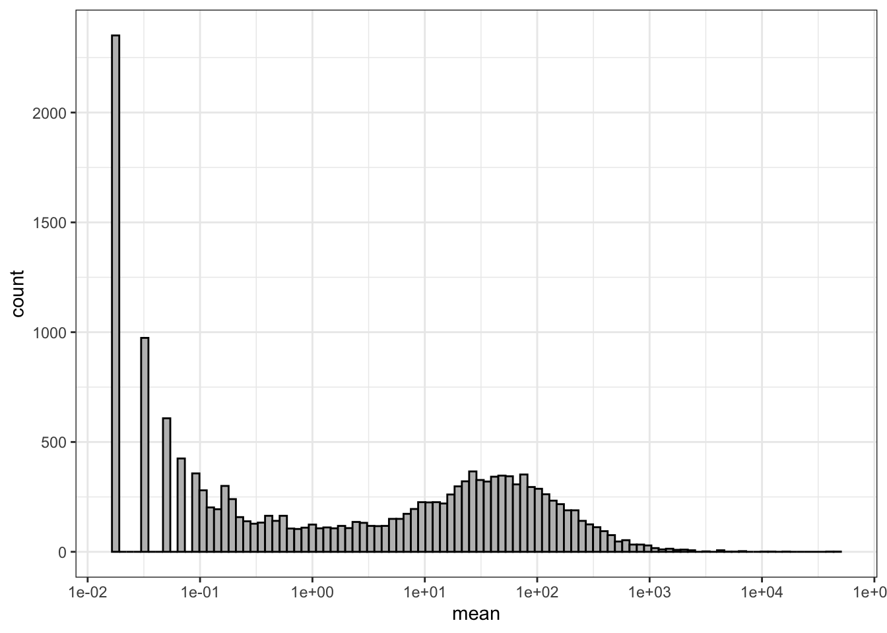
Define lowly expressed genes using a mean threshold:
dat$low_mean <- dat$mean < 1Tabulate the number of lowly expressed genes:
knitr::kable(table(dat$low_mean), col.names = c("Lowly expressed", "Count"))| Lowly expressed | Count |
|---|---|
| FALSE | 8893 |
| TRUE | 46579 |
Plot the percentage of expressing cells against the log-mean expression for each gene:
ggplot(dat, aes(mean, detected)) +
geom_point(alpha = 0.1, colour = "grey") +
geom_smooth(colour = "black", se = FALSE) +
scale_x_log10(n.breaks = 10) +
theme_bw()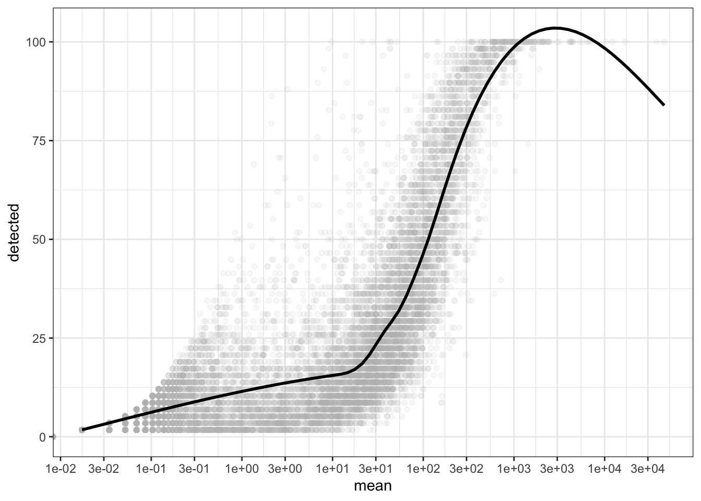
Define lowly detected genes as having a minimum of 1 read in at least 1 percent of cells:
dat$low_detected <- !rowSums(counts(sce) >= 1) >= (ncol(sce) * 0.01)Tabulate the number of lowly detected genes:
knitr::kable(table(dat$low_detected), col.names = c("Lowly detected", "Count"))| Lowly detected | Count |
|---|---|
| FALSE | 16226 |
| TRUE | 39246 |
Compare the number of genes selected between methods using an Euler diagram:
mat <- cbind(Keep = TRUE, Mean = dat$low_mean, Freq = dat$low_detected)
fit <- euler(mat, shape = "circle")
col <- RColorBrewer::brewer.pal(n = 3, name = "Pastel2")
plot(fit, fill = col, quantities = TRUE)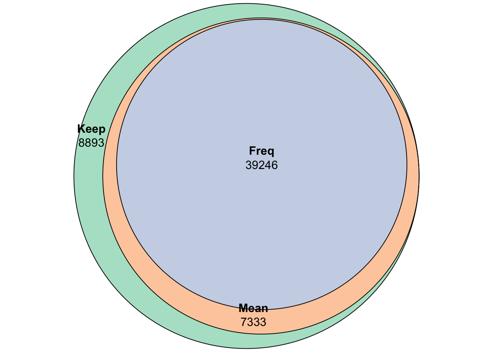
Bookmark low abundance and frequency genes (no filtering is performed because of data integration):
rowData(sce) <- cbind(rowData(sce), dat[, c("low_mean", "low_detected")])After quality control we have a dataset with 58 cells and 55472 genes.
saveRDS(sce, "data/01-quality-control.rds")
sessionInfo()R version 3.6.3 (2020-02-29)
Platform: x86_64-apple-darwin15.6.0 (64-bit)
Running under: macOS Catalina 10.15.5
Matrix products: default
BLAS: /Library/Frameworks/R.framework/Versions/3.6/Resources/lib/libRblas.0.dylib
LAPACK: /Library/Frameworks/R.framework/Versions/3.6/Resources/lib/libRlapack.dylib
locale:
[1] en_GB.UTF-8/en_GB.UTF-8/en_GB.UTF-8/C/en_GB.UTF-8/en_GB.UTF-8
attached base packages:
[1] parallel stats4 stats graphics grDevices utils datasets
[8] methods base
other attached packages:
[1] scran_1.14.6 scater_1.14.6
[3] ggplot2_3.3.2 robustbase_0.93-6
[5] patchwork_1.0.1 eulerr_6.1.0
[7] SingleCellExperiment_1.8.0 SummarizedExperiment_1.16.1
[9] DelayedArray_0.12.3 BiocParallel_1.20.1
[11] matrixStats_0.56.0 Biobase_2.46.0
[13] GenomicRanges_1.38.0 GenomeInfoDb_1.22.1
[15] IRanges_2.20.2 S4Vectors_0.24.4
[17] BiocGenerics_0.32.0 BiocSingular_1.2.2
[19] workflowr_1.6.2
loaded via a namespace (and not attached):
[1] nlme_3.1-148 bitops_1.0-6 fs_1.4.2
[4] RColorBrewer_1.1-2 rprojroot_1.3-2 tools_3.6.3
[7] backports_1.1.8 R6_2.4.1 irlba_2.3.3
[10] vipor_0.4.5 uwot_0.1.8 mgcv_1.8-31
[13] colorspace_1.4-1 withr_2.2.0 tidyselect_1.1.0
[16] gridExtra_2.3 compiler_3.6.3 git2r_0.27.1
[19] BiocNeighbors_1.4.2 labeling_0.3 scales_1.1.1
[22] DEoptimR_1.0-8 stringr_1.4.0 digest_0.6.25
[25] rmarkdown_2.3 XVector_0.26.0 pkgconfig_2.0.3
[28] htmltools_0.5.0 limma_3.42.2 highr_0.8
[31] rlang_0.4.7 rstudioapi_0.11 FNN_1.1.3
[34] DelayedMatrixStats_1.8.0 generics_0.0.2 farver_2.0.3
[37] dplyr_1.0.0 RCurl_1.98-1.2 magrittr_1.5
[40] GenomeInfoDbData_1.2.2 Matrix_1.2-18 Rcpp_1.0.5
[43] ggbeeswarm_0.6.0 munsell_0.5.0 viridis_0.5.1
[46] lifecycle_0.2.0 stringi_1.4.6 yaml_2.2.1
[49] edgeR_3.28.1 zlibbioc_1.32.0 Rtsne_0.15
[52] grid_3.6.3 promises_1.1.1 dqrng_0.2.1
[55] crayon_1.3.4 lattice_0.20-41 splines_3.6.3
[58] cowplot_1.0.0 polylabelr_0.2.0 locfit_1.5-9.4
[61] knitr_1.29 pillar_1.4.6 igraph_1.2.5
[64] codetools_0.2-16 glue_1.4.1 evaluate_0.14
[67] vctrs_0.3.1 httpuv_1.5.4 gtable_0.3.0
[70] purrr_0.3.4 polyclip_1.10-0 xfun_0.15
[73] rsvd_1.0.3 RSpectra_0.16-0 later_1.1.0.1
[76] viridisLite_0.3.0 tibble_3.0.3 beeswarm_0.2.3
[79] statmod_1.4.34 ellipsis_0.3.1